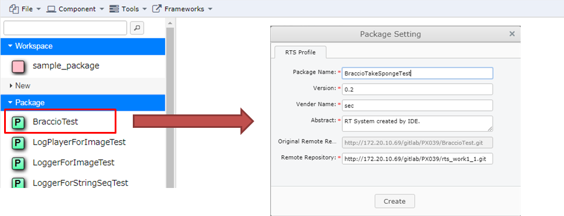
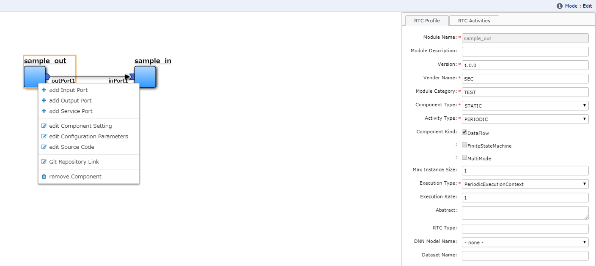
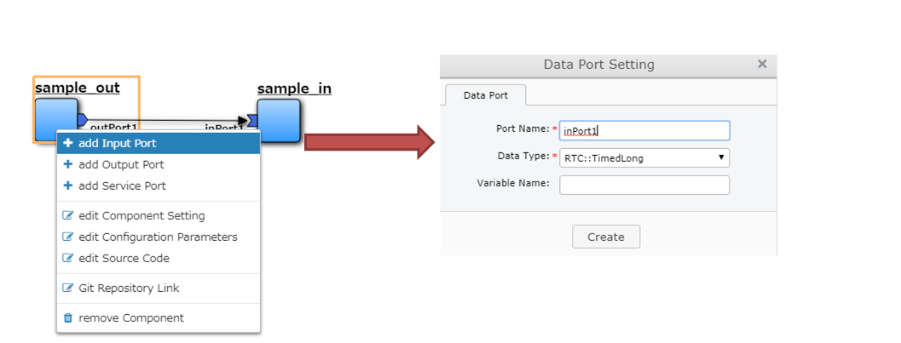
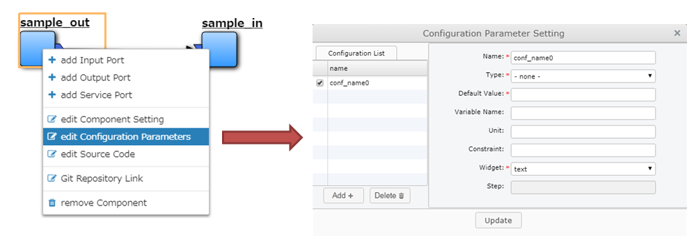
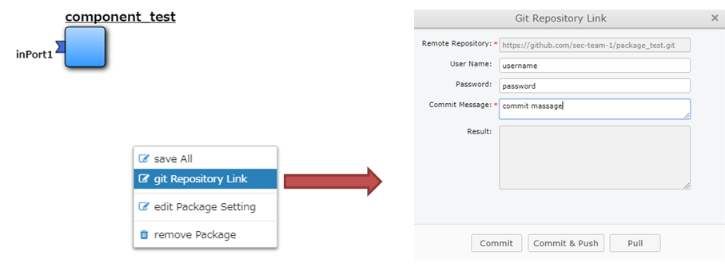

5. AirGraph (RTM Editor)¶
5.1. 概要¶
AirGraph (RTM Editor)の主な機能は次の通りです．
- WEBブラウザ上でRTMによるロボットシステム開発が可能
- ロボットシステム単位での一覧・再利用が可能
- コンポーネント単位での一覧・再利用が可能

- 画面構成
- 画面上部：操作メニューエリア
- 画面左部：システム・コンポーネントの一覧表示エリア
- 画面右部：システム・コンポーネントのプロパティ設定エリア
- 画面下部：システムのコンフィギュレーション設定エリア
- 画面中央：システム構築・コンポーネント開発エリア
5.2. OpenRTM-aistとの関係について¶
- OpenRTM-aist では以下の2つの主なツールが提供されています．
- RTCBuilder
- RTSystemEditor
- 基本的にはAirGraphと上記ツールには互換性があります．
- RTCBuilderにて作成したコンポーネントはAirGraphで表示・編集することが可能です．
- AirGraphで作成したコンポーネントをRTCBuilderで表示する場合，以下の修正が必要です．
- RTC.xmlのNNInfoタグを削除する
- AirGraphで実行中のシステムは，RTSystemEditorで表示することが可能です．
5.3. wasanbonとの関係について¶
- AirGraphはパッケージ・コンポーネントの構成管理ツールとして wasanbon を利用しています．
- wasanbonを直接操作することで，コンソール上での構築も可能です．
5.4. 使い方¶
5.4.1. パッケージを新規に作成する¶

- 画面左部の[New]-[New Pkg.]を画面中央にドラッグ＆ドロップします．
- パッケージの設定画面が表示されますので，内容を変更し，[Create]ボタンを押下します．
| 項目名 | 概要 |
|---|---|
| Package Name | パッケージ名 |
| Version | バージョン番号 |
| Vender Name | 会社名 |
| Abstract | パッケージ概要 |
| Remote Repository | GitHubなどのリポジトリURL |
- 画面左部の[Workspace]に新しいパッケージが表示され，画面中央には何もない状態になります．
5.4.2. パッケージを流用して作成する¶
- 画面左部の[Package]の任意のパッケージを画面中央にドラッグ＆ドロップします．
- 新規作成時と同様に，パッケージの設定画面が表示されますので，必要な箇所を変更し，[Create]ボタンを押下します．
- 画面左部の[Workspace]にコピーされたパッケージが表示され，画面中央にはそのパッケージに含まれるコンポーネントが表示されます．
5.4.3. パッケージのプロパティを変更する¶

- 以下のいずれかの方法でパッケージの設定画面を起動します．
- コンポーネントが未選択の状態で，画面下部の[Property]ボタンを押下する（画面右部に表示されます）．
- 画面上部の[Tools]-[Package Setting]を押下する．
- 画面中央の白い領域で表示される右クリックメニューの[edit Package Setting]を押下する.
- 必要な箇所を変更し，[Update]ボタンを押下します．
5.4.4. コンポーネントを新規に作成する¶

- 画面左部の[New]-[New Comp(C++).]または[New Comp(Python).]を画面中央にドラッグ＆ドロップします．
- コンポーネントの設定画面が表示されますので，内容を変更し，[Create]ボタンを押下します．
| 項目名 | 概要 |
|---|---|
| Module Name | コンポーネント名 |
| Module Description | コンポーネント概要 |
| Version | バージョン番号 |
| Vender Name | 会社名 |
| Module Category | コンポーネントカテゴリ |
| Component Type | コンポーネント型 |
| Activity Type | アクティビティ型 |
| Component Kind | コンポーネント種類 |
| Max Instance Size | 最大インスタンス数 |
| Execution Type | 実行型 |
| Execution Rate | 実行周期 |
| Abstract | コンポーネント概要 |
| RTC Type | RTC型 |
| DNN Model Name | DNNモデル名 |
| Dataset Name | データセット名 |
- 画面中央にコンポーネント名と青いコンポーネントが表示されます．

5.4.6. コンポーネントのプロパティを変更する¶
- 以下のいずれかの方法でパッケージの設定画面を起動します．
- コンポーネントを選択している状態で，画面下部の[Property]ボタンを押下する（画面右部に表示されます）．
- コンポーネントの右クリックメニューの[edit Component Setting]を押下する.
- 必要な箇所を変更し，[Update]ボタンを押下します．
- [RTC Activities]タブのチェックボックスを変更すると，該当するメソッドの有効無効が自動反映されます.
- 主なメソッドは以下の通りです．
| メソッド名 | 概要 |
|---|---|
| OnInitialize | 初期化される際に一度だけ呼ばれます． |
| OnActivated | 非アクティブ状態からアクティブ化されるとき，一度だけ呼ばれます． |
| OnExecute | アクティブ状態時に周期的に呼ばれます． |
| OnDeactivated | アクティブ状態から非アクティブ化されるとき，一度だけ呼ばれます． |
| OnAborting | エラー状態に入る前に一度だけ呼ばれます． |
| OnReset | エラー状態からリセットされ，非アクティブ状態に遷移する際に一度だけ呼ばれます． |
| OnError | エラー状態にいる間，周期的に呼ばれます． |
| OnFinalize | コンポーネントの終了時に一度だけ呼ばれます． |
| OnStateUpdate | OnExecuteの後，毎回呼ばれます． |
| OnRateChanged | 実行コンテキストのrateが変更された際に呼ばれます． |
| OnStartup | 実行コンテキストが実行を開始する際に一度だけ呼ばれます． |
| OnShutdown | 実行コンテキストが実行を停止する際に一度だけ呼ばれます． |
5.4.7. ソースコードを編集する¶

- コンポーネントのダブルクリック，またはコンポーネントの右クリックメニューから[edit Source Code]を押下します．
- ソースコード編集画面が表示されますので，任意の変更を行います．
- Pythonの場合，コンポーネント名.pyがメインのソースコードです．
- C++の場合，includeフォルダのコンポーネント名.hとsrcフォルダのコンポーネント名.cppがメインのソースコードです．
- 変更が終わったら，ソースコード編集画面を終了します．
- このタイミングではブラウザ上のみの変更で，サーバ上には変更は反映されていません．
5.4.8. データポートを追加・変更する¶
- データポートを追加する場合，コンポーネントの右クリックメニューから[add Input Port]または[add Output Port]を押下します．
- 変更する場合はポートの右クリックメニューの[edit Port]を押下します．
- ポートの設定画面が表示されますので，内容を変更し，[Create]ボタンを押下します．
| 項目名 | 概要 |
|---|---|
| Port Name | ポート名 |
| Data Type | データ型 |
| Variable Name | 変数名 |
- 変更がサーバに自動反映され，必要なポート定義がソースコードに自動反映されます．
- C++の場合
// <rtc-template block="inport_declare">
RTC::TimedLong m_port;
InPort<RTC::TimedLong> m_portIn;
// </rtc-template>
cpp_test::cpp_test(RTC::Manager* manager)
// <rtc-template block="initializer">
: RTC::DataFlowComponentBase(manager),
m_portIn("port", m_port)
// </rtc-template>
{
}
RTC::ReturnCode_t cpp_test::onInitialize()
{
// Set InPort Buffers
addInPort("port", m_portIn);
}
- Pythonの場合
def __init__(self, manager):
OpenRTM_aist.DataFlowComponentBase.__init__(self, manager)
self._d_port = RTC.TimedLong(RTC.Time(0,0), 0)
self._portOut = OpenRTM_aist.OutPort("port", self._d_port)
def onInitialize(self):
# Bind variables and configuration variable
# Set InPort buffers
# Set OutPort buffers
self.addOutPort("port", self._portOut)
5.4.9. サービスポートを追加・変更する¶

- サービスポートを追加する場合，コンポーネントの右クリックメニューから[add Service Port]を押下します．
- 変更する場合はポートの右クリックメニューの[edit Port]を押下します．
- ポートの設定画面が表示されますので，内容を変更します．
| 項目名 | 概要 |
|---|---|
| Port Name | ポート名 |
| Position | 表示位置 |
- サービスポートを利用するためには，インターフェースを定義する必要があるため，画面左下の[Add]ボタンを押下します．
- インタフェースが一覧に追加されますので，追加したインタフェースを選択し，画面右側の内容を変更します．
| 項目名 | 概要 |
|---|---|
| Interface Name | インタフェース名 |
| Direction | 方向 |
| Instance Name | インスタンス名 |
| Variable Name | 変数名 |
| IDL File | IDLファイル |
| Interface Type | インタフェース型 |
- 独自型でのインターフェースを実現したい場合，画面下部の[Upload_IDL_File]ボタンを押下し，IDLファイルをアップロードすることが可能です．
- アップロードしたIDLファイルは，各コンポーネントのIDLフォルダに配置されます（ソースコードとして編集も可能です）．
- 変更が完了したら，[Create]ボタンを押下します．
- 変更がサーバに自動反映され，必要なポート定義などがソースコードに自動反映されます．
- C++の場合
// CORBA Port declaration
// <rtc-template block="corbaport_declare">
RTC::CorbaPort m_servicePortPort;
// </rtc-template>
// Service declaration
// <rtc-template block="service_declare">
Img_CameraCaptureServiceSVC_impl m_interface;
// </rtc-template>
cpp_test::cpp_test(RTC::Manager* manager)
// <rtc-template block="initializer">
: RTC::DataFlowComponentBase(manager),
m_servicePortPort("servicePort")
// </rtc-template>
{
}
RTC::ReturnCode_t cpp_test::onInitialize()
{
// Set service provider to Ports
m_servicePortPort.registerProvider("interface", "Img::CameraCaptureService", m_interface);
// Set service consumers to Ports
// Set CORBA Service Ports
addPort(m_servicePortPort);
}
- Pythonの場合
def __init__(self, manager):
OpenRTM_aist.DataFlowComponentBase.__init__(self, manager)
self._servicePortPort = OpenRTM_aist.CorbaPort("servicePort")
self._interface = Img_CameraCaptureService_i()
def onInitialize(self):
# Set service providers to Ports
self._servicePortPort.registerProvider("interface", "Img::CameraCaptureService", self._interface)
# Set CORBA Service Ports
self.addPort("self._servicePortPort")
5.4.10. コンフィギュレーションを追加・変更する¶
- コンフィギュレーションを追加・変更する場合，コンポーネントの右クリックメニューから[edit Configuration Parameter]を押下します．
- コンフィギュレーション設定画面が表示されますので，画面左下の[Add]ボタンを押下します．
- コンフィギュレーションが一覧に追加されますので，追加されたコンフィギュレーションを選択し，画面右側の内容を変更します．
| 項目名 | 概要 |
|---|---|
| Name | パラメタ名 |
| Type | データ型 |
| Default Value | 初期値 |
| Variable Name | 変数名 |
| Unit | 単位 |
| Constraint | 制約条件 |
| Widget | Textのみ |
| Step | 選択不可 |
- 変更が完了したら，[Update]ボタンを押下します．
- 変更がサーバに自動反映され，必要な変数定義などがソースコードに自動反映されます．
- C++の場合
// <rtc-template block="config_declare">
/*!
*
* - Name: conf_name0
* - DefaultValue: 0
*/
int m_conf_name0;
// </rtc-template>
RTC::ReturnCode_t cpp_test::onInitialize()
{
// Bind variables and configuration variable
bindParameter("conf_name0", m_conf_name0, "0");
return RTC::RTC_OK;
}
- Pythonの場合
def __init__(self, manager):
OpenRTM_aist.DataFlowComponentBase.__init__(self, manager)
# <rtc-template block="init_conf_param">
"""
- Name: conf_name0
- DefaultValue: 0
"""
self._conf_name0 = [0]
# </rtc-template>
def onInitialize(self):
# Bind variables and configuration variable
self.bindParameter("conf_name0", self._conf_name0, "0")

{kind=link}
{kind=link}
{kind=link}
{kind=link}
5.4.12. パッケージ・コンポーネントを保存する¶
- 以下のいずれかの方法でパッケージおよびコンポーネントの保存を行います．
- 画面上部の[File]-[Save All]を押下する．
- 画面中央の白い領域で表示される右クリックメニューの[save All]を押下する.
- 全ての変更が保存され，コンポーネントの変更内容からパッケージの定義情報が更新されます．
5.4.13. パッケージ・コンポーネントをビルドする¶

- 画面上部の[Component]-[Build All]を押下します．
- コンソール画面が表示されますので，左側の画面に"Success"と表示されれば成功です．
- Pythonの場合，ビルドは不要ですが，実行周期の設定などを更新する必要があるので，システム実行前はビルドしてください．
- C++で"Failed"と表示された場合は，ソースコードの再編集を行ってください．
- コンソールは自動更新されますので，自動更新を止める場合は，画面下部の[Auto tail and Scroll to bottom]のチェックボックスをOFFにしてください．
5.4.14. システムを実行する¶

- 画面上部の[Component]-[Run Package]を押下します．
- コンソール画面が表示されますので，左側の画面に"Activate"と表示されれば成功です．
- IDEではコンポーネントのプロセス起動からアクティブ化までを一気に行います．
- Kill Processなどが表示された場合，何らかのエラーが発生していますので，ソースコードの再編集・再ビルドを行ったください．
- Pythonの場合は構文エラーでも実行時に検出されるため，画面右側にエラーなどが表示されている可能性があります．
- コンソールは自動更新されますので，自動更新を止める場合は，画面下部の[Auto tail and Scroll to bottom]のチェックボックスをOFFにしてください．
5.4.15. システムを停止する¶

- 画面上部の[Component]-[Terminate Package]を押下します．
- コンソール画面が表示されますので，左側の画面に"Kill Process"などが表示されれば成功です．
5.4.16. コンポーネントをGitリポジトリと連携する¶
- Gitリポジトリと連携する場合，あらかじめgitconfgの設定が必要となります．
- はじめてCommitを行う場合には，IDEを実行しているサーバ上でコンソールからgitconfigの設定を行ってください．
$ git config --global user.name "your name"
$ git config --global user.email youremail@example.com

- コンポーネントの右クリックメニューから[Git Repository Link]を押下します．
- Gitリポジトリ設定画面が表示されますので，ユーザ名などの項目を入力し，[Commit & Push]ボタンを押下します．
- Result欄に結果が表示されます．
- Git側のリモートリポジトリはIDE上から作成することはできないため，あらかじめGitHub上などで作成してください．
- ローカルリポジトリのみに反映する場合には，[Commit]ボタンを押下してください．
- ~/.netrcなどにユーザ名・パスワードをあらがじめ書いておくことで，ユーザ名・パスワードの入力を省略することが可能です．
5.4.17. パッケージをGitリポジトリと連携する¶
{kind=link}
- 以下のいずれかの方法でGitリポジトリ設定画面を起動します．
- 画面上部の[File]-[Git Repository Link]を押下する．
- 画面中央の白い領域で表示される右クリックメニューの[Git Repository Link]を押下する.
- Gitリポジトリ設定画面が表示されますので，ユーザ名などの項目を入力し，[Commit & Push]ボタンを押下します．
- Result欄に結果が表示されます．
- 自動的にパッケージにコンポーネントのリポジトリが紐付けられます．
- Git側のリモートリポジトリはIDE上から作成することはできないため，あらかじめGitHub上などで作成してください．
- ローカルリポジトリのみに反映する場合には，[Commit]ボタンを押下してください．
- ~/.netrcなどにユーザ名・パスワードをあらがじめ書いておくことで，ユーザ名・パスワードの入力を省略することが可能です．